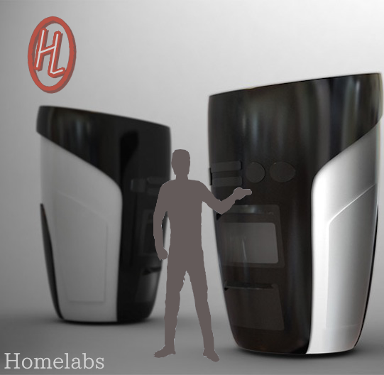

Você não está cansado de resfriados ?! Sim, você ! É, você mesmo ! Não está cansado levantar todas as manhãs
e pisar no chão gelado da sua casa, apartamento ?! Todos os dias sem excessão ?! Não finja que
não é com você ! Você sabia que todos os dias pelos menos uma pessoa fica resfriada por que não achou suas
pantufas ? ou pior, por que não queria vestir aqueles croques horrorosos ?! e ainda por cima ! quando você
coloca seus calçados você sente aquela pedra de gelo sugando seu calor corporal por longos cinco minutos !
Admita ! que você não pode mais suportar está humilhação de engatinhar pela casa em plena manhã, como um bebê
babão, para colocar seus calçados no microondas ! NÃO ! Não queremos mais ficar nas pontas dos pés na esperança
de que o tapete vai conservar nossos dedos até terminarmos de escovar os dentes ! CHEGA ! Por isso !
EXPLOSÃO !!!
Compre agora mesmo o mais novo aqueçedor de chão TileHeater da Homelabs, com seu potente motor 300 sua casa ficará aquecida de manhã, de tarde e de noite. Liberte-se das pantufas de bichinhos da sua sua irmã, deixe para trás aqueles croques show dos horrores e esqueça seus chinelos de coração da ex e viva ainda hoje o aconchego de ontem, você não vai nem perceber que saiu da cama. "Eu já não podia mais aguentar, eu tentava sair da cama de meias mas o frio me obrigava a colocar o chinelo que ás vezes parecia ainda mais gelado... *corta ...sempre que eu olhava pra baixo e me via usando chinelos com meia minha vontade era de nunca ter saído da cama... *corta ... Agora, com o TileHeater da Homelabs eu me sinto confortável a manhã inteira... *corta ...me sinto mais confiante. ".
Bethany Beaverly, Alabama.
Alice Kinston, California.
Sim ! O TileHeater da Homelabs é silencioso ! bonito ! e elegante, todas as visitas vão ficar impressionadas com este eletrodoméstico de 2m x 3,2m decorando seu banheiro ! sua cozinha ! seu quarto ! sua sala ! Abandone sua fortaleza da solidão e aqueça sua festa com este utensílio do balacobaco ! "...Eu me pendurei na pia e ergui meus pés pra me proteger do chão de menos de 15º graus Celsius... *corta ...a torneira estava molhada e eu escorreguei e caí... *corta ...a pior parte foi que eu só usava uma bermuda e uma camiseta fina, o frio me tomou por inteiro de imediato, me levantei o mais rápido que pude mas já era tarde demais... *corta ...fiquei resfriada"
Não arrisque mais a sua saúde por causa do chão gelado, O TileHeater pode ficar ligado 24 horas por dia sem nenhum gasto adicional e vai deixar você mais disposto e te dar energia, "Eu não sei como o chão podia estar tão gelado, estáva um lindo dia lá fora, eu tentei correr da cama para as cadeiras mas não adiantou, então eu pulei da cadeira para o sofá, a cadeira caiu e quebrou, mas valeu a pena, não perdi o fim de semana resfriado."
Miles Pryce, Florida.
Expulse da sua vida este drama de uma vez por todas com o TileHeater da Homelabs ! O TileHeater possui um motor que gira a 88 vezes por segundo, essa agitação aquece até as partes mais profundas do chão até mesmo no andar térreo! a energia gerada do TileHeater carrega os 360 laseres aquecedores, cada um com uma lente de 2mm de quartzo para maximizar o calor e alcançar toda a sua casa, ligue agora para o 0800 7 mil e 700 1000 e garanta já o seu ! seja um dos cinco primeiros a ligar e receba totalmente de graça o OverSight da Homelabs e evite ter de passar o dia todo olhando para o seu nariz "Agora me sinto completa e aquecida", "Adeus resfriados, pra sempre !", "Obrigado Homelabs ! ".
